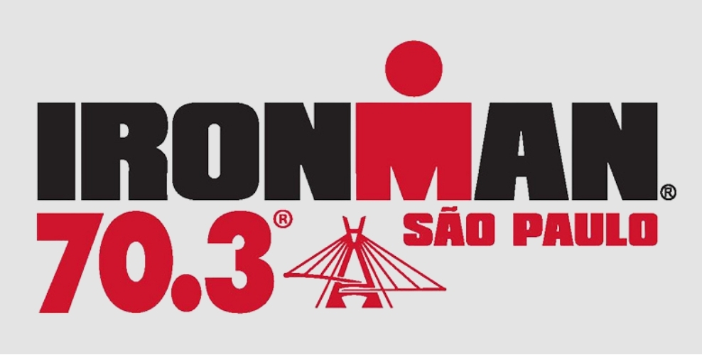
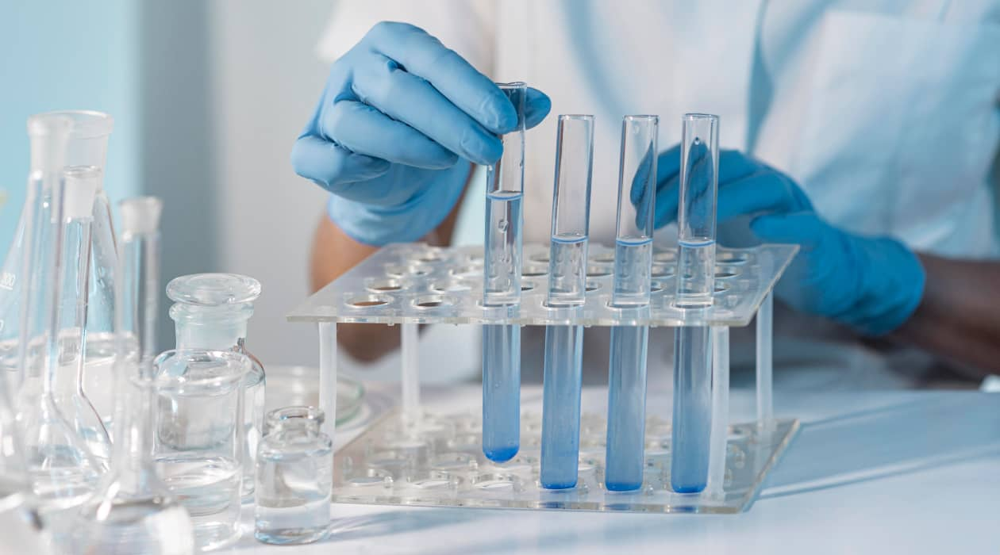

Somos Drink Suma. Producimos suplementos naturales que tengan un efecto probado en mejorar la performance y calidad de vida de las personas.
Nos obsesiona la hidratación y por eso nuestro primer producto es un sobre con electrolitos: Sodio, Potasio y Magnesio. Todo lo que necesitas para una hidratación ideal, sin azúcar, cafeína, calorías ni agregados químicos.
El camino de Drink Suma comenzó en el año 2022, cuando entre amigos decidimos poner a prueba nuestra resistencia física, empezando un ciclo de entrenamiento con la meta final de completar el Ironman 70.3 en Río de Janeiro. De un día para otro, nos encontramos llevando nuestro cuerpo al límite casi todos los días, y al mismo tiempo trabajando largas horas en entornos corporativos que requerían un gran esfuerzo mental.
Rápidamente nos dimos cuenta que para sostener el nivel de exigencia física y a la vez rendir en nuestro trabajo con máxima energía, teníamos que cambiar aspectos del cuidado de nuestro cuerpo. Empezamos por lo más conocido: ajustar nuestra alimentación. Sentimos la diferencia, una alimentación adecuada ayudaba. Sin embargo, todavía no nos sentíamos al 100%: aparecían calambres, no nos recuperábamos muscularmente y hasta nos dolía la cabeza en ciertos momentos del día.
En medio de esta etapa de experimentación, un gran amigo nos introdujo una nueva manera de hidratarse que consistía en combinar agua con una dosis alta de electrolitos (Sodio, Potasio, y Magnesio). Investigando, nos enteramos que nuestro cuerpo diariamente pierde estos minerales en cantidades significativas y la dieta promedio no llega a reponerlos. Con algunos clicks más encontramos incontables ejemplos de personas que a través de una mejor hidratación usando estos minerales habían logrado cambiar por completo su estilo de vida. El único problema es que todavía no existía un producto de estas características en nuestra región.
En consecuencia, desarrollamos nuestra propia fórmula de electrolitos para cubrir nuestras necesidades de hidratación. Fuimos refinando variantes del producto a fuerza de prueba y error en varias disciplinas como triatlones y ultramaratones, mientras otros amigos con diferentes estilos de vida también empezaron a consumirlo. En todos los casos el resultado fue un éxito.
Así fue como decidimos que teníamos que armar una empresa que se enfoque plenamente en algo tan básico e importante como la hidratación. Eventualmente nos rodeamos de expertos en el área como nutricionistas, ingenieros en alimentos y laboratorios especializados para llegar a la fórmula perfecta, creando así una combinación ideal de electrolitos, sin aditivos artificiales ni azúcares.
Así nació SUMA, un producto pensado para acompañarte en tus objetivos diarios, tanto físicos como mentales. Somos tres amigos que impulsados por la pasión y la motivación queremos compartir con nuestra comunidad los beneficios de una hidratación adecuada.